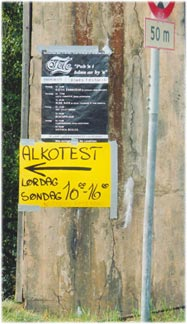
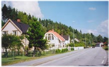
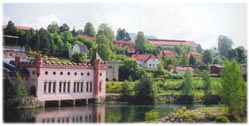
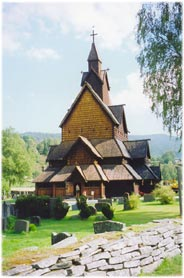
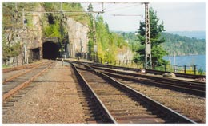
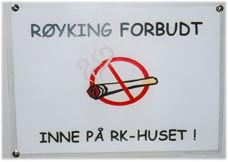
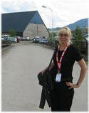

Светлана Фунтусова
Много слов уже было написано и посвящено музыкальным впечатлениям о фестивале. На самом деле смешно с моей стороны повторяться или пытаться копировать все это. Кроме того, я никак не могу быть экспертом в блюзовой музыке - оставим это настоящим знатокам. Поэтому хочу написать об околофестивальных событиях и краеведческих наблюдениях вокруг Нутоддена. Все-таки это более моя вотчина - Норвегия.
Будучи несколько раз в Конгсберге проездом, в этом году я впервые посетила фестиваль в Нутоддене. Еще за неделю до события мы с одним норвежским журналистом сидели в Осло и разговаривали обо всем на свете, когда я призналась, что еду в Нутодден. Человек засмеялся.
- Что здесь смешного?
- Место. Я был там дважды, но абсолютно не помню ни одного дня из этого времени.
"This cat's on a hot tin roof"

За две недели до этого случилось другое событие. Жизнь странна. Я собиралась уехать на край северной земли, чтобы в тишине и спокойствии дописать книгу, но присланная sms-ка возвестила, что легендарные the Stray Cats в оригинальном составе едут в европейский тур. Это означало возможность своими глазами взглянуть на группу, что воспела уличных бродячих котов на помойках и "прекрасное далеко" - старые добрые 60-е, а при наилучшем раскладе и поболтать лично с реальными cats. Естественно, меня не смогли удержать даже милые сердцу фьорды, полные селедки и туристов.Действо происходило в Бонне (Германия), куда я сломя голову рванула из норвежского Тронхейма на рейсовом автобусе через Швецию и Данию, получив попутно кучу впечатлений и весьма полезный опыт. И это стоило того. Честно говоря, Брайан Сетзер стал мне очень симпатичен своей энергией и энтузиазмом. А еще легкостью, с которой он покорил весь open air с несколькими сотнями зрителей. В меру упитанный хулиганистый дяденька с чуть хрипловатым голосом, потрясающим чувством юмора и со следами весьма бурной молодости как на лице, так и на теле, без всяческих декораций и спецэффектов и огней, сделал потрясающее шоу.
Публика в зале, под стать ему в поведении и имидже, бурно реагировала на каждое его движение и слово. Местная пресса охарактеризовала Сетзера так: "Hot rod drivin', whiskey-drinkin', heavily-tattooed biker/greaser nominated for Grammy for interpretation of Tchaikovsky's "Nutcracker suite" from 1892". На что он, хихикая и многозначительно жестикулируя, ответил лично и непосредственно прямо со сцены: "Yes, I am".
Это было шоу, которому необходимо посвятить отдельную статью. И не одну: Когда он запел про лимонные деревья, растущие на каждом углу в Теннесси, я поняла: "Вот она - связующая деталь в ассоциациях между The Stray Cats и Норвегией!" Благовоспитанные и послушные мальчики из А-ха с лопатками и совочками занимались селекцией и "мичуринством" в саду около дома с "Oranges on Appletrees", а этот, их ровесник, кстати, весь в тату, с сигаретами и бутылкой виски в кармане, просто перелез через забор и ободрал все плоды их труда. Примерно такая картина нарисовалась под утро в моем воспаленном от впечатлений мозгу. Особенно запечатлелся во сне расстроенный образ Мортена Харкета, который пытался защитить свою собственность: "Did anyone approach you?" На что Брайан ехидно замечал, наступая и дымя ему в лицо сигаретой: "Oh man, I picked a lemon. Hey, why don't you paint it yellow?" : Проснувшись и избавившись от этого кошмара, я поняла, что проблема с цитрусовыми - это крест по жизни.
Только с тех пор меня мучает одна нездоровая фантазия - увидеть вместе на сцене Брайана Сетзера и Видара Бюска, который когда-то также сильно впечатлил, открыв для меня новую страницу музыкальной жизни. Наверное, это был бы лучший концерт столетия. Примерно с таким, вышеописанным, настроением я приехала на фестиваль в Норвегию.

Первое впечатление от Нутоддена, лишь упрочившееся с течением времени, - город похож на Твин Пикс из одноименного фильма. Тот же лес, горы, река, заброшенная лесопилка (в данном месте представленная несколькими закрытыми промышленными предприятиями) и железнодорожная станция. Люди заслуживают отдельного разговора. Местные жители, не гости фестиваля, кои съехались со всех уголков Норвегии и отдельных частей Европы.Нутодден - обычный среднестатистический норвежский городок в фюльке (области) Телемарк, каких полно по всей Норвегии и если бы не фестиваль, вполне возможно мало, кто знал бы, где он находится на карте Норвегии. Не так давно норвежские газеты опубликовали итоги ответов на вопрос о самом скучном городе страны. Первое место было отдано Драммену, находящемуся в часе езды от Осло. Так, Нутодден, мягко говоря, немного поскучнее Драммена. Положение спасает только блюзовый фестиваль. Один раз в год на пять дней.

В семи километрах от Нутоддена (в Хеддале) находится любопытная достопримечательность - самая большая деревянная церковь Норвегии, построенная в XI в. До нее, к великому счастью, еще не добрались местные сатанисты, поэтому можно утверждать, что церковь - оригинальной постройки. Вдвоем с моим знакомым мы немного поковыряли стену, пропитанную еще при постройке специальным раствором, который позволил церкви простоять столетия. Девушка-экскурсовод поведала, что треснутые и расщепленные доски - это то, что новое, после реставрации. А еще то, что в древних норвежских церквях никогда не было окошек с западной стороны. Там, куда уходит вечером солнце. Ибо бесовские создания могли проникнуть именно с этой стороны. Между прочим, во время служения здесь находились места для женщин.Тут же (в 300 м от церкви) в местном краеведческом музее можно увидеть старые фотографии Нутоддена начала прошлого века. Мало, что изменилось с тех пор. Правда, за прошедшее с тех пор столетие тут успели построить электростанцию с дамбой на реке, основав всемирно известного ныне норвежского экономического гиганта - Norsk Hydro, и благополучно прикрыть все дела, вернувшись тем самым на прежний уровень. Точно такая же история произошла с местной бумажной фабрикой. За разумность изъятия всякой промышленности из городка выступает только один факт - волнение местного народонаселения об экологии.
Только совсем непонятно "отмирание" железной дороги. Ни один из опрошенных мной местных жителей не подтвердил факта возможности поездки на поезде из Нутоддена и обратно. Ржавые рельсы идущие в никуда подтверждали их слова. Но на поверку два "естествоиспытателя" обнаружили идущий состав в одном из тоннелей. Словно Летучий Голландец, локомотив неожиданно вынырнул из мрака горы, едва не переехав отважных путешественников. Несмотря на этот момент, удивления все-таки было больше, чем страха: В ответ на очередной вопрос постфактум люди повторяли, что поезда в Нутодден не ходят. Вот такой Mystery Train.

В стародавние времена люди семьями уходили отсюда, настолько жизнь в этих краях была сложна. В поисках лучшей доли они уплывали в Америку, но многие возвращались сюда же спустя годы, так и не найдя своей земли обетованной. А она ждала их здесь - в Телемарке. Это "метание-искание" обеспечило смешение культур, внесло новые элементы и породило "новых" людей. Вероятно, этим можно объяснить такое большое количество талантливых и известных людей в Норвегии, родившихся в этом регионе - Ларвик, Крагеро, Арендал, Лангесунд, Нутодден и т.д. Именно в этих местах родился Теодор Киттлесен, нарисовавший мечту всех искателей счастья - загадочную Сорию Морию, которая "далека, ох далека".Кстати, именно лыжники из Телемарка совршили первый значительный скачок в развитии лыж: изобрели новые крепления и стиль катания, благодаря которым и поныне держится весь лыжно-горнолыжный спорт, включая фристайл. В середине XIX в. здесь жил крестьянин Сондре Норхайм. Он занимался выращиванием картофеля на промерзлых холмах долины Телемарк, мастерил мебель, лыжи и все, в чем нуждалась округа. Он-то все и изобрел. Плюс первым опробовал прыжки с трамплина в 1868 г., когда ему было 43 года. Правда, в конце концов в 1884 г. Сондре покинул свою промерзлую ферму в Телемарке и уехал в прерии Северной Дакоты.
Еще в Нутоддене родился Коре Вирюд (K?re Virud). Говорят, он стал первым норвежским блюзовым музыкантом известным за пределами страны и поэтому местом для блюзового фестиваля был выбран Нутодден. Еще говорят, что здесь просто наиболее активны фанаты блюза. А, может быть, просто все сложилось как пазл именно в этом месте. Месте "Твин Пикса".

Напишу сразу, что наибольшую досаду вызывает расписание концертов. Все происходит в одно время и в разных местах, а хочется посетить максимум и "с чувством, с толком, с расстановкой". Иногда достаточно сложно сделать выбор в пользу кого-то из музыкантов, покупая билеты, и приходится мучиться дилеммой "быть или не быть", а потом расстраиваться по поводу "не был и не видел". Отчасти положение спасает аккредитация, но посвящать драгоценное время мелким пробежкам меж концертами тоже не хочется. В конце концов, я просто выбросила из головы эту проблему выбора: пусть будет, как будет.Фестиваль - очередное опровержение стереотипа "норвежцы - холодная и замкнутая нация". Думаю, его придумал некоммуникабельный человек. Особенно "продвинутые" и жаждущие приключений норвежцы постоянно во что-то ввязываются. Как примеры - авантюры с Blitz, Bellona или Volapuk.
Последние дни фестиваля я жила в доме своего норвежского знакомого, переехавшего в Нутодден несколько месяцев назад. Его балкон находился точно над тентом одной из сцен фестиваля. Это вызывало букет смешанных чувств и позволило прочувствовать сие мероприятие с точки зрения местных жителей. Прекрасное единство возникает, если по сердцу все происходящее. В обратном случае необходима эвакуация из города, поскольку в нем нет места, где не слышно блюза. Кроме того, чтобы попасть в собственный дом приходилось каждый раз объяснять секьюрити при входе во двор, что здесь твоя квартира и ты не идешь на концерт, поэтому не будешь покупать билет. Лично мне нужно было каждый раз демонстрировать аккредитацию, а потом под удивленные взгляды направляться не в стороны сцены, а в подъезд дома напротив. В один из вечеров мы сидели на балконе и пытались играть в унисон с происходящим на сцене на найденном в квартире стратокастере. Не знаю, как организаторам, но зрителям понравилось, а человек с балкона соседнего дома пригласил на пиво:
Приезжая на фестиваль, можно останавливаться в специально разбитом на это время кемпинге, в гостинице в Конгсберге, на квартире у знакомых или в гостевом доме, что снимает блюз-клуб из Осло. Приезжая на фестиваль, можно знать всех и все или же совсем наоборот - абсолютно никого. Все это не настолько важно, в принципе. Важна атмосфера праздника, которую смогли создать/уловить организаторы фестиваля. Это факт.

Здесь невозможно чувствовать себя чужым и одиноким. Нутодден мал, и основное место прогулок во внеконцертное время происходит на его главной улице - Стургате. Путь - туда, а на обратном - мелькают те же лица. Хотя, конечно, не только старых, но и новых знакомых здесь можно встретить, где угодно, и зачастую эти встречи весьма забавны. Накануне фестиваля один местный норвежец, будучи в некоторой степени родства с моими друзьями, рассказывал о том, что он - большой фанат Бюска и был на его концертах аж: три раза! Естественно, я не преминула сказать, что посетила как минимум семь подобных мероприятий. На том и закончили. Последнее слово оказалось за новым знакомым, когда он вышел с духовой секцией на сцену вместе с Бюском: Три раза он посетил концерты как зритель. А сколько отыграл - сказать не смог. Хотя, быть может, всему виной "tretti ?l" накануне:Сколько бы слов не было написано о фестивале, все равно они в достаточной мере не смогут передать все в точности. Сюда нужно обязательно приехать и самому пережить несколько интересных и безумных дней в году. Ведь не напрасно Notodden International Blues festival так известен во всем мире.

Я стояла в бесконечной очереди на регистрацию в Гардемуне (Осло). Рейс на Москву откладывали на пару часов. Русские волновались, норвежцы терпеливо ждали, негромко переговариваясь. Нервный молодой человек, стоявший рядом, раз 15 наступил мне на ногу, ни разу не извинившись при этом. Я привыкала к мысли о возвращении на родину после всех европейских приключений: И тут увидела знакомого норвежца, работающего в Москве.Оригинал статьи на norge.ru
Светлана Фунтусова